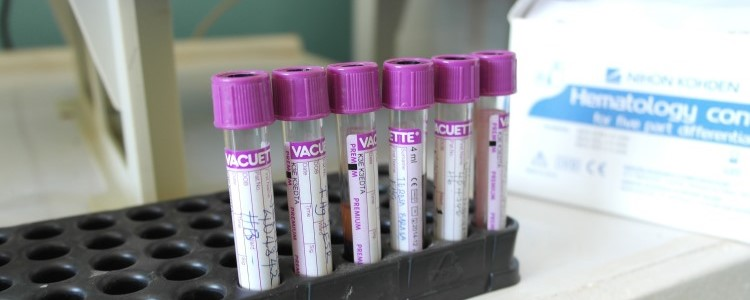
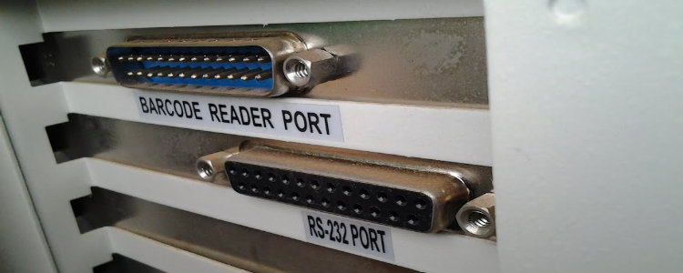
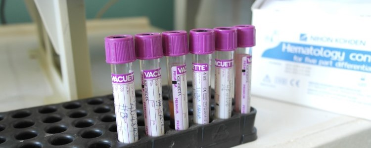
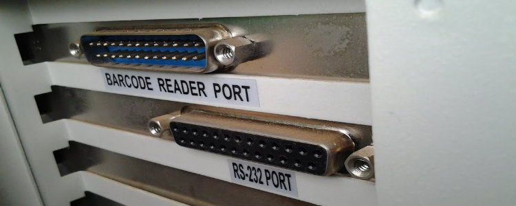
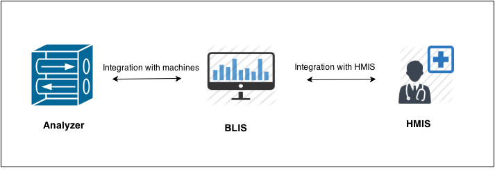

Overview
BLIS (Basic Laboratory Information System) Kenya, is a fork of C4G BLIS an open source Web-based system that can be implemented in a local, district, or national laboratory. The system efficiently manages the work flow in the lab through integrating with the hospital EMR's, automatically receiving lab test requests from the clinicians/doctors and returning the results. The system tracks the movement of specimens providing respective turn-around-times for tests, and provides individual workload monitoring, test reporting and quality control.
Main Features
Integration with instruments
BLIS-Kenya has been integrated with a number of analyzers through a configurable utility which automatically reads the results from the instrument for onward transmission and reporting to other systems, eliminating transcription errors and improves efficiency, Celltac-F machine in Bungoma is one example.
Integration with HMIS
BLIS-Kenya integrates smoothly with existing Hospital management systems, allowing for quick and seamless introduction of the laboratory information system into the hospital.
Other features of BLIS include
- Standardization of laboratory data and procedures.
- Customization to local work flow requirements.
- Detailed analytic reporting.
- Robust data security.
- User friendly interface
- Data backups.
In use
@iLabAfrica has implemented BLIS in the Bungoma District hospital and Kapsabet District hospital, in Bungoma it is connected to the hospital HMIS called Sanitas. In Kapsabet we have connected to MEDBOSS the hospital management system.
Publications
The implementation of BLIS-Kenya has been cited as a success story in Africa and the results of this have been accepted in the African society for laboratory medicine conference to be held in Cape Town, South Africa on Nov 30-Dec 4th 2014. Link
The Team